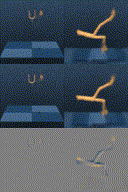
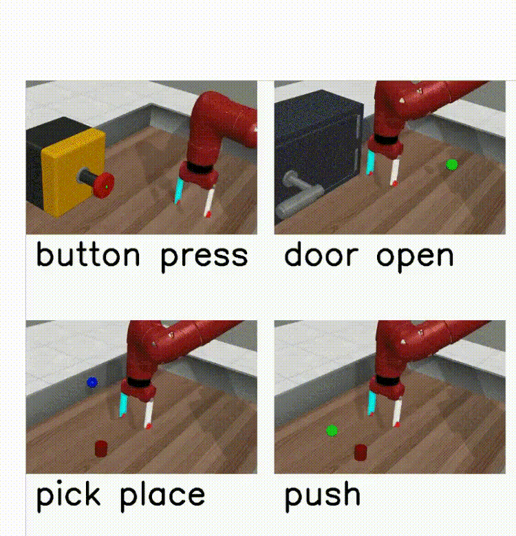

|
Frank Röder
I am a member of the
Institute for Data Science Foundations at the
Hamburg University of Technology, where I research
topics of sequential decision-making, world modeling and causality.
I am currently wrapping up my PhD in Computer Science, awaiting the defense.
My PhD mainly focused on reinforcement learning and language grounding in robotics under
the supervision of Dr. Manfred Eppe (2021-2025) and Prof. Stefan Wermter (2021-2022).
Currently I am working under the supervision of Prof. Nihat Ay on topics of embodied intelligence.
In addition to that, I am teaching mathematics, machine learning, and reinforcement learning.
If you are looking for thesis supervision, please consider applying via our institute homepage.
Contact: frank.roeder [at] tuhh.de
Google Scholar /
GitHub /
ORCID
|
|
|

|
Dynamics-Aligned Latent Imagination in Contextual World Models for Zero-Shot Generalization
Frank Röder, Jan Benad, Manfred Eppe, Pradeep Kr. Banerjee
Conference on Neural Information Processing Systems (NeurIPS) 2025
[OpenReview,
ArXiv,
Code]
We show that dynamics-aligned representations improve zero-shot
generalization for contextual world models. DALI integrates
within the Dreamer architecture to infer latent context
representations from interactions, enabling adaptation to
unseen environmental conditions without costly retraining.
|
|

|
Meta-World+: An Improved, Standardized, RL Benchmark
Reginald McLean, Evangelos Chatzaroulas, Luc McCutcheon,
Frank Röder, Tianhe Yu, Zhanpeng He,
K.R. Zentner, Ryan Julian, J K Terry, Isaac Woungang,
Nariman Farsad, Pablo Samuel Castro
Conference on Neural Information Processing Systems (NeurIPS)
2025; also International Conference on Machine Learning (ICML)
2025 Workshop Track CODEML (Spotlight)
[OpenReview,
ArXiv,
Code]
An improved and standardized reinforcement learning benchmark
suite for fair evaluation and comparison of multi-task and
meta RL algorithms.
|
-
Tutor, Mathematics II (SS 2025),
Institute for Mathematics
-
Tutor, Mathematics I (WS 2024/25),
Institute for Mathematics
-
Tutor, Introduction to Reinforcement Learning Seminar (SS 2024),
Institute for Data Science Foundations
-
Tutor, Introduction to Reinforcement Learning Seminar (SS 2023),
Institute for Data Science Foundations
-
Supervisor, Neural Networks Seminar (SS 2022),
Knowledge Technology Group
-
Supervisor, Bio-Inspired Artificial Intelligence Seminar (WS 2021/22),
Knowledge Technology Group
-
Supervisor, Neural Networks Seminar (SS 2021),
Knowledge Technology Group
-
Supervisor, Bio-Inspired Artificial Intelligence Seminar (WS 2020/21),
Knowledge Technology Group
|
|
Industry Experience as Working Student
|
-
05/2018 - 08/2019: Business Intelligence / Developer at Peaks & Pies
-
07/2017 - 04/2018: Fullstack Software Developer at Bellmorgen Vorsorge GmbH
-
04/2017 - 07/2017: Software Developer at the Deutsche Gesellschaft für Privatpatienten
|
|
{kind=link}